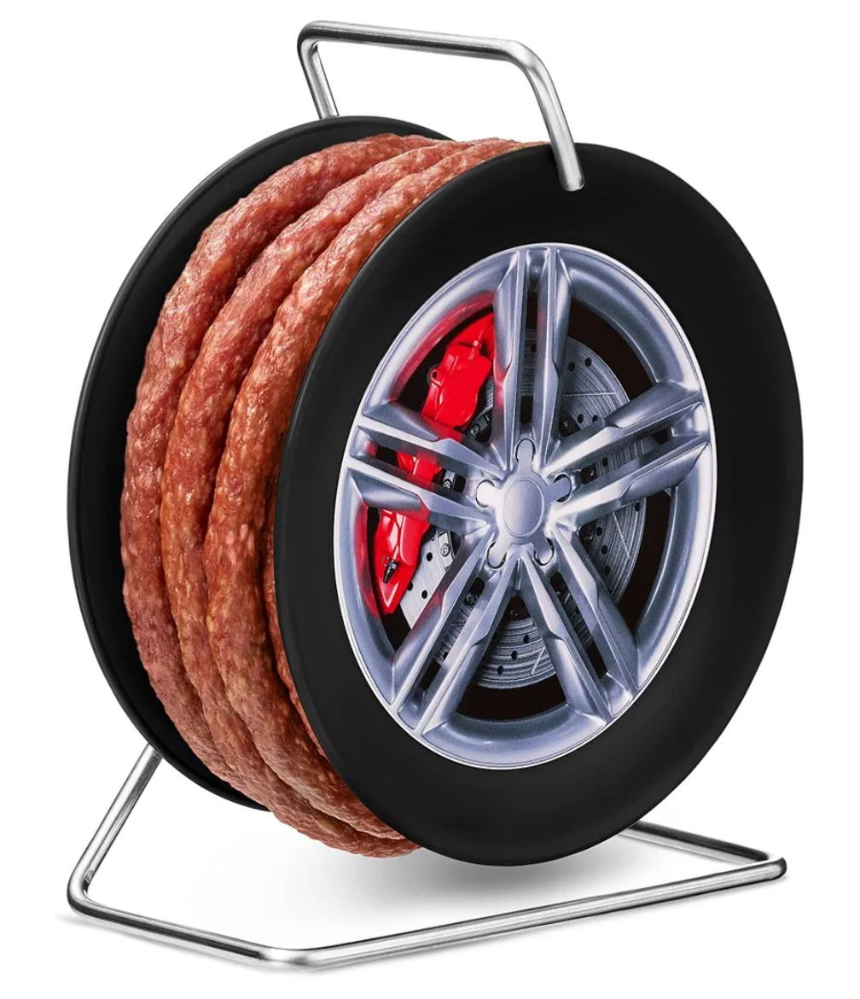

October 10, 2025

- Leberkäse enthält keinen Käse.
- Teewurst enthält keinen Tee.
- Weingummi enthält keinen Wein.
- Seelachs ist kein echter Lachs.
- Zu Currywurst wird Ketchup und Currypulver gereicht, das ist ein Gewürzmischung, kein echter Curry.
- Analogkäse ist kein echter Käse.
- Gelschinken ist kein Schinken.
- Kräuterbutter, die nur aus Pflanzenfett besteht.
- Studentenfutter ist nicht nur für Studenten.
- Schinkenwurst, die nur aus Resten und nicht echtem Schinken besteht.
- Bockwurst, die aus Schweinefleisch besteht, nicht (Ziegen-) Bock.
- Milchbrötchen, die nur Spuren von Milch enthalten.
- Vanillepudding mit Vanillin anstatt echter Vanille.
- Lachssteak enthält kein Fleisch von Säugetieren.
- Mettigel enthält keinen Igel.
- Kalter Hund enthält keinen Hund.
- Tafelspitz enthält keine Tafel und ist nicht spitz.
- Schweinelachs enthält keinen Fisch.
- Russisch Brot kommt nicht aus Russland.
- Toast Hawaii kommt nicht aus Hawaii, sondern aus Deutschland.
- Wiener Würstchen kommen nicht aus Wien.
- Hamburger, Amerikaner und Berliner enthalten kein Menschenfleisch.
- Hundekuchen ist kein Kuchen.
- Fleischsalat ist kein Salat, sondern Mayo mit Fleisch.
- Bienenstich enthält keine Bienen.
- Schweineohren sind weder Ohren noch enthalten sie Schweinefleisch.
- Eiswein ist nicht gefroren.
- Schokolinsen enthalten keine Linsen.
- Käsekuchen enthält Quark, keinen Käse.
- Kochschinken wird gepresst, nicht gekocht.
- Katzenzungen enthalten weder Zungen noch Katzenfleisch.
- Putenaufschnitt, der mit billigen Fleischsorten gestreckt wird.
- Lebensmittel mit künstlichen Atomen anstatt echten Zutaten.
- Wurst, die mit billigen Bindemitteln gestreckt wurde.
- Seegurke ist kein Gemüse.
- Holzschnitzel enthält kein Fleisch.
- Die Bettwurst hält warm und ist nicht essbar.
- Kinderschokolade besteht nicht aus Kindern und darf auch von Erwachsenen gegessen werden.
- Und die Wurstfelge gehört nicht ans Auto. ---
Aber es darf nicht vegane Wurst heißen, damit ich nicht aus Versehen das falsche Grillgut kaufe und der Fussballabend in einer kulinarischen Katastrophe endet.
Kannst du dir nicht ausdenken.
Zusammenfassung
In diesem Blogbeitrag wird die Thematik der veganen Wurst behandelt. Es werden verschiedene Aspekte und Alternativen zur herkömmlichen Wurstproduktion beleuchtet.
Hauptthemen: Vegane Wurst Lebensmittel Ernährung Veganismus Wurst
Schwierigkeitsgrad: Einfach
Lesezeit: ca. 3 Minuten